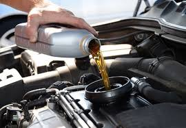
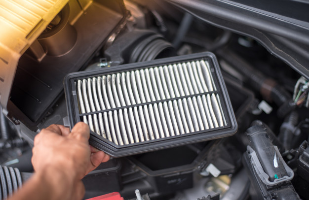
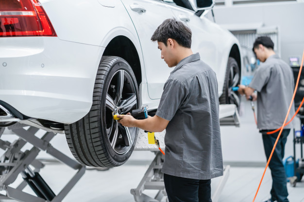

Serviços

Troca de Oléo
Venha fazer a troca de oléo pois o oléo é essencial para lubrificar, limpar e refrigerar o motor para não ter um desempenho prejudicado no seu carro!

Verificação do filtro de ar do carro
Venha fazer a Verificação do filtro de ar pois o sem essa verificação permite que as particulas de sujeiras penetrem no motor poluindo então o ambiente interno do veículo.

Verificação do filtro de ar do carro
Venha fazer a Verificação de rodas pois Para um desempenho com maior qualidade e segurança, os pneus devem ser calibrados com a pressão indicada pelo fabricante, profundidade dos sulcos adequada, alinhamento e balanceamento das rodas corretos. Os pneus são a única parte do carro que tem o contato direto com o piso.
Contato
Convido vocês para falar com a gente!!